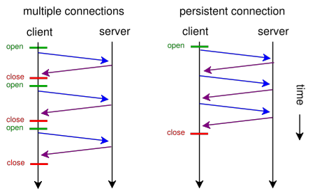
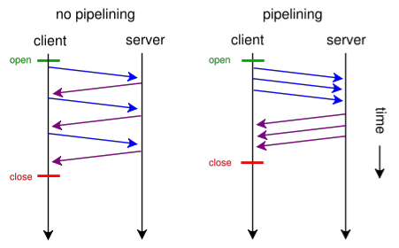

Unofficial - F5 Certification Exam Prep Material > F5 101 - App Delivery Fundamentals Study Guide 11/01/19 Source | Edit on
Section 5 - Application Delivery Platforms¶
Objective - 5.01 Describe the purpose, advantages, use cases, and challenges associated with hardware based application delivery platforms and virtual machines¶
5.01 - Explain when a hardware based application deliver platform solution is appropriate and when a virtual machine solution is appropriate
Hardware vs. Software
Different situations call for the BIG-IP Virtual Edition and the physical BIG-IP hardware.
The Virtual Edition should be used for discrete workloads on commodity hardware. It also provides flexible and quick deployment options and failure isolation. Virtual Editions can also give you the flexibility to run in proprietary computing environments like Amazon Web Services (AWS) and other public cloud offerings.
Physical hardware provides a number of important benefits and is necessary in many situations. F5 hardware is purposefully built to provide high performance for application delivery. Using an F5 physical platform also offers a single-vendor solution. If a customer is running an F5 Virtual Edition on an HP server and an issue arises, troubleshooting between vendors is more difficult. When F5 hardware runs F5 software, this is avoided.
Additionally, a BIG-IP physical device can run all BIG-IP modules and perform hardware SSL offload and compression. It provides customers with all other features that may be important to their deployment, such as always-on management, certifications, special-purpose FPGAs, and improved security.
5.01 - Explain the purpose, advantages, and challenges associated with hardware based application deliver platform solutions
Hardware
BIG-IP ADC appliances can help you simplify your network by offloading servers and consolidating devices, saving management costs as well as power, space, and cooling in the data center.
With the massive performance and scalability of the BIG-IP platform, you can reduce the number of Application Delivery Controllers you need to deliver even the most demanding applications. By offloading computationally intense processes, you can significantly reduce the number of application servers needed.
BIG-IP hardware includes:
- SSL hardware acceleration—Offload costly SSL processing and accelerate key exchange and bulk encryption with best-in-market SSL performance.
- Hardware compression*—Cost-effectively offload traffic compression processing from your servers to improve page load times and reduce bandwidth utilization.
- OneConnect connection pooling—Aggregate millions of TCP requests into hundreds of server-side connections. Increase server capacity and ensure requests are handled efficiently.
- Embedded Packet Velocity Acceleration (ePVA)*—Provide specific application delivery optimizations, support for low latency and tunneling protocols, and denial-of-service (DoS) protection. ePVA uses field-programmable gate array (FPGA) technology tightly integrated with TMOS and software to deliver:
- High performance interconnects between Ethernet ports and processors.
- L4 offload, enabling leading throughput and reduced load on software.
- Hardware-accelerated SYN flood protection.
- More than 65 types of DoS attacks detected and mitigated in hardware.
- Native Financial Information eXchange (FIX) support for message routing and tag substitution while maintaining low latency requirements.
Advantages
The Advantages of F5 BIG-IP Technology
Unique architecture and patented hardware and software innovations from F5 offer unmatched capabilities, including:
F5 ScaleN architecture
ScaleN enables you to scale performance on demand, virtualize, or horizontally cluster multiple BIG-IP devices, creating an elastic Application Delivery Networking infrastructure that can efficiently adapt as your business needs change.
- On-demand scaling—Increase capacity and performance with on-demand scaling, where you can simply add more power to your existing infrastructure instead of adding more devices. The latest BIG-IP appliance models can be upgraded to the higher performance model within each series through on-demand software licensing. On- demand licensing enables organizations to right-size application delivery services and support growth without requiring new hardware.
- Operational scaling—F5 can virtualize ADC services with a
multi-tenant architecture that supports a variety of BIG-IP versions
and product modules on a single device. Multi- tenant device
virtualization is provided by F5’s unique Virtual Clustered
Multiprocessing (vCMP) technology, which enables select hardware
platforms to run multiple BIG-IP guest instances. Each BIG-IP guest
instance looks and acts like a physical BIG-IP device, with a
dedicated allocation of CPU, memory, and other resources.
- You can further divide each vCMP guest using multi-tenant features such as partitions and route domains, which can isolate configuration and networks on a per-virtual-domain basis. Within each virtual domain, you can further isolate and secure configuration and policies by using a role-based access system for greater administrative control. When combining both route domains/partitions with vCMP guests, F5 provides the highest density multi-tenant virtualization solution that can scale to thousands of virtual ADC (vADC) instances.
- This ability to virtualize BIG-IP ADC services means service providers and enterprise users can isolate based on BIG-IP version, enabling departmental or project-based tenancy as well as performance guarantees, while benefiting from managing a single, consolidated application delivery platform and increased utilization.
- Application scaling—Increase capacity by adding BIG-IP resources
through an all-active approach. With application scaling, you can
scale beyond the traditional device pair to eliminate the need for
idle and costly standby resources. Application scaling achieves this
through two forms of horizontal scale: Application Service
Clustering, which focuses on application scalability and high
availability, and Device Service Clustering, designed to efficiently
and seamlessly scale BIG-IP application delivery services.
- Application Service Clustering delivers sub-second failover and comprehensive connection mirroring for a highly available cluster of up to eight devices at the application layer, providing highly available multi-tenant deployments. Workloads can be moved across a cluster of devices or virtual instances without interrupting other services and can be scaled to meet the business demand.
- Device Service Clustering can synchronize full device configurations in an all-active deployment model, enabling consistent policy deployment and enforcement across devices—up to 32 active nodes. This ensures a consistent device configuration that simplifies operations.
Challenges
Some of the only challenges with hardware are that it can take longer to acquire for implementations, which can add to time lines in projects, and some public cloud environments do not let you run your own hardware, since it is a strictly virtualized environment.
5.01 - Explain the purpose, advantages, and challenges associated with virtual machines
Virtual Hardware
Virtualization is critical to maintaining an adaptable network and accomplishing the scale, consolidation, and business continuity demanded by today’s advanced application infrastructures.
F5 BIG-IP virtual editions (VEs) are virtual application delivery controllers (vADCs) that can be deployed on all leading hypervisors and cloud platforms running on commodity servers. BIG-IP VEs deliver all the same market-leading Software-Defined Application Services (SDAS)—including advanced traffic management, acceleration, DNS, firewall, and access management—that run on F5 purpose-built hardware. VE software images are downloadable and portable between on-premises virtualized data centers, public, and hybrid cloud environments. With BIG-IP virtual editions and F5 BIG-IQ management solutions, you can rapidly provision consistent application services across the data center and into the cloud.
Advantages
Deploy with increased agility
- Quickly and easily spin up, spin down, or migrate application delivery services in and across the data center and public cloud, using instant deployment options as needed.
Achieve automation and orchestration in cloud architectures
- Automate deployment and configuration or integrate with leading orchestration frameworks—in cloud or software-defined networking (SDN) environments through application level templates, REST APIs, and granular programmability.
Optimize application services more efficiently
- Rapidly provision and consolidate application services on your existing servers, unlocking the broadest feature density through flexible licensing models that align to your business needs.
Provide the ultimate in flexibility
- Get the most flexible deployment options in the industry, with support across all major virtualization platforms for both private and public cloud environments.
Challenges
Some of the only challenges with have to do with performance when compared to what dedicated hardware can do. Throughput speeds and volumetric processing of SSL transactions per second does not compare with anything above a 4000 series in hardware.
5.01 - Explain the advantages of dedicated hardware (SSL card, compression card)
The charts below tell the story of Hardware vs. Software, especially in relation to SSL offload with hardware or software.
Virtual Editions
Available in a range of performance options, F5 virtual editions can be sized and configured to suit the application services required. Maximum performance is based on applicable VE licensed performance ranges and resources (number of CPU cores/memory) allocated.
| Performance | Starting | Maximum* |
|---|---|---|
| L7 requests per second | 3,000 | 450,000 |
| L4 connections per second | 2,000 | 135,000 |
| Throughput | 25 Mbps | 10 Gbps** |
| Maximum connections | 1 million | 10 million |
| SSL | ||
| Maximum SSL TPS (1K keys/2K keys) | 900/900 | 12,000/3,550 |
| SSL throughput | 23 Mbps | 4 Gbps |
| Software compression | ||
| Maximum software compression throughput | 20 Mbps | 4 Gbps |
Appliance Hardware Editions
Available in a range of performance options, F5 hardware appliances can be sized and configured to suit the application services required.
| Performance | 2000s Model | 12250v Model |
|---|---|---|
| L7 requests per second | 212,000 | 4 million |
| L4 connections per second | 75,000 | 1.5 million |
| Throughput | 5 Gbps L4/L7 | 84 Gbps/40 Gbps L4/L7 |
| Maximum connections | 5 million | 10 million |
| SSL | ||
| Maximum SSL TPS (2K keys) | 2,000 | 240,000 |
| SSL throughput | 4 Gbps* | 40 Gbps* |
| Hardware compression | ||
| Maximum compression throughput | N/A | 40 Gbps |
Viprion Hardware Editions
Available in a range of performance options, F5 hardware blades for chassis platforms can be sized and configured to suit the application services required.
| Performance | 2150 blades | 4340N blades |
|---|---|---|
| L7 requests per second | 1 million | 2.5 million |
| L4 connections per second | 400,000 | 1.4 million |
| Throughput | 40Gbps/18Gbps L4/L7 | 80 Gbps/40 Gbps L4/L7 |
| Maximum connections | 24 million | 72 million |
| SSL | ||
| Maximum SSL TPS (2K keys) | 10,000 | 30,000 |
| SSL throughput | 4 Gbps* | 20 Gbps* |
| Hardware compression | ||
| Maximum compression throughput | 10 Gbps | 20 Gbps |
Objective - 5.02 Describe the purpose of the various types of advanced acceleration techniques¶
5.02 - Describe the purpose of TCP optimization
Optimizing TCP
Although TCP is ubiquitous today, the protocol has undergone many updates to help overcome limitations that existed in earlier versions. An acceleration device can help optimize TCP by implementing features that may not be present in either a client or server’s TCP implementation.
An acceleration device can also decrease the number of server-side TCP connections required to service client requests. Additionally, it can help accelerate HTTP traffic by increasing the number of simultaneous client-side TCP connections a browser can open while downloading a web page.
General TCP Optimizations
Because it operates as a proxy, an acceleration device may be able to implement features missing from a client or server that can help speed application delivery. The acceleration device may be able to leverage optimizations natively supported by particular client or server operating systems and is likely to be able to implement optimizations that are not operating-system specific. The benefit of high speed, high latency WAN connections are that the acceleration device can perform TCP window scaling to improve performance. To overcome packet loss, the acceleration device can implement selective TCP acknowledgements (SACK) and advanced congestion control algorithms to prevent TCP from reducing throughput.
These are only two examples. Some acceleration devices implement hundreds of improvements to TCP in order to help it perform better.
Decreasing Server-side TCP Connections
Reducing server-side connection processing can dramatically improve application performance and reduce the number of servers required to host an application. TCP connection setup and teardown requires significant overhead, particularly for servers. As the number of open server connections increases, maintaining the open connections while simultaneously opening new connections can severely degrade server performance and therefore, user response time.
Although multiple transactions (for example, file transfers) can occur within a single TCP connection, a connection is generally between one client and one server. Normally, a connection closes either when a server reaches a defined transaction limit or when a client has transferred all needed files from that server. Because an acceleration device operates as a proxy, it can aggregate, or “pool,” TCP server-side connections by combining many separate transactions, potentially from many users, through fewer (or one) TCP connections. The acceleration device opens new server-side connections only when necessary, and instead reuses existing connections for requests from other users whenever possible.
Increasing Client-side TCP Connections
By default, most web browsers limit the maximum number of simultaneous HTTP/HTTPS connections that the browser can open to one URL. For example, Microsoft Internet Explorer v7 and below limit the maximum number of simultaneous connections to two per domain. Earlier versions of Firefox limit the browser to eight connections per domain. Given that a web page can contain dozens of objects, this limitation can greatly slow page-loading times.
For example, suppose a user running Internet Explorer v7 requests a page from a web server that returns a response containing a list of the 30 objects that make up the web page. Further assume that that all objects are accessed through the domain, www.example.com. The browser opens two connections to www.example.com, requests one object at a time per connection (the limit imposed by TCP), and then reuses the two connections until all files have been downloaded or the connection reaches the server’s transaction limit. If the connection suffers high latency, round trip time is high and download speed can be greatly reduced.
If the server terminates the connection after reaching a pre-defined transaction limit, the browser opens another connection to that URL. This process continues until the page downloads completely. Operating this way needlessly increases the page load time.
Some acceleration devices can “spoof” a browser by modifying the URLs in an HTTP response to speed page downloading. The modified URLs must first be defined in DNS to point to the same IP address. When examining the server response, the modified names appear to the browser to be different servers, so the web browser opens parallel connections to these altered URLs rather than serially downloading the objects from one URL.
5.02 - Describe the purpose of HTTP Keep-alives, caching, compression, and pipelining
HTTP Protocol and Web Application Optimizations
HTTP protocol optimizations maintain high user performance levels by optimally tuning each HTTP session. For example, some web applications are unable to return an HTTP 304 status code (Not Modified) in response to a client request rather than returning the entire object. Because an acceleration device proxies connections and caches content, it may be able to note when there is no change to a requested object and return the 304 response instead. This enables the browser to load the content from its own cache, even in conditions where the web application is hard-coded to re-send the object.
Some acceleration devices can additionally examine and change server responses to provide better browser and server performance. For example, some off-the-shelf and custom applications add a no-cache header to some objects, which directs a browser not to cache an object, rather to download the object from the origin web server every time. The purpose of the no-cache header is to ensure a browser always downloads dynamic (changing) data.
However, applications in some cases mark static data like a company logo as being non-cacheable. Some acceleration devices can re-write the server response to mark the object as being cacheable and supply a more realistic expiration date. This feature can help remedy problems with off-the-shelf or custom-developed applications where code cannot easily be modified.
Caching
Caching involves storing data close to users and re-using the data during subsequent requests. Caching usually takes one of three forms. The first is the classic approach taken by web browsers and web applications. In this case, the web application code running on a server instructs a browser to cache an object marked as static for a specific time period. During that time period, the browser reads the object from cache when building a web page until the content expires. The client then reloads the content. Caching prevents the browser from having to waste time and bandwidth by always accessing data from a central site. This is the most common form of caching in use today.
The second form involves deploying an acceleration device in a data center to offload requests for web application content from web servers. This method operates asymmetrically, with the acceleration device caching objects from web servers and delivering them directly to users. Some acceleration devices cache static content only, while some additionally can process HTTP responses, include objects referenced in a response, and send the included objects as a single object to a browser. This not only offloads web server processing but also offloads web browser processing too. A side benefit to this approach is that as the acceleration device is typically in the data center and connected to higher-speed connections, the acceleration device can both assemble the objects from instructions in the HTTP response and deliver them using fewer objects and with fewer transactions.
Operating in this manner, caching can dramatically reduce server TCP and application processing, improve web page loading time, and hence reduce the need to regularly expand the number of web servers required to service an application.
The third form of caching involves using symmetric acceleration devices to cache and serve content to users at the remote site. The remote acceleration device serves content locally whenever possible, which reduces both response time and network utilization. This form of caching can be deployed not only for HTTP, but also for other protocols as well.
Caching has its limitations. First, if the client-side acceleration device serves content regardless of whether it is in contact with its remote peer, the client side device must implement access control to prevent unauthorized access to an object. Second, the client-side device may serve older, stale versions of content that change after the connection between the devices is broken. While this typically is not an issue with static web content, it can have significant impact on files that regularly change. When both issues are addressed, remote caching can greatly improve application performance, especially for web applications and static files used with other applications.
Compression
Compression is one of the oldest acceleration techniques, having been around for decades. GZIP, the most common compression algorithm, is implemented in virtually every web browser and server. Compression algorithms such as GZIP are good at finding small, repeating patterns and reducing the characters required to send them. Besides web servers and browsers, acceleration devices implement compression. This is done for two reasons: first to offload compression overhead from web servers and second, to enable the acceleration device to perform other optimizations that improve performance for an HTTP/HTTPS stream.
Compression can be computationally expensive, especially for algorithms that provide high compression levels. These algorithms are of limited use with high-speed communication, where delays must be minimized to maintain rapid user response times. More effective compression algorithms are therefore limited to low- speed communications where more time is available to perform compression processing without degrading user throughput and hence, response times. Fortunately, compression hardware assist is now available in some acceleration devices that can achieve compression rates in excess of 1 Gbps.
Pipelining
Everyone wants web sites and applications to load faster, and there’s no shortage of folks out there looking for ways to do just that. But all that glitters are not gold and not all acceleration techniques actually do all that much to accelerate the delivery of web sites and applications. Worse, some actual incur risk in the form of leaving servers open to exploitation.
A brief history
Back in the day when HTTP was still evolving, someone came up with the concept of persistent connections. See, in ancient times - when administrators still wore togas in the data center - HTTP 1.0 required one TCP connection for every object on a page. That was okay, until pages started comprising ten, twenty, and more objects. So someone added an HTTP header, Keep-Alive, which basically told the server not to close the TCP connection until (a) the browser told it to or (b) it didn’t hear from the browser for X number of seconds (a time out). This eventually became the default behavior when HTTP 1.1 was written and became a standard.
I told you it was a brief history.
This capability is known as a persistent connection, because the connection persists across multiple requests. This is not the same as pipelining, though the two are closely related. Pipelining takes the concept of persistent connections and then ignores the traditional request - reply relationship inherent in HTTP and throws it out the window.
The general line of thought goes like this:
“Whoa. What if we just shoved all the requests from a page at the server and then waited for them all to come back rather than doing it one at a time? We could make things even faster!”
HTTP pipelining
In technical terms, the browser initiates HTTP pipelining by opening a connection to the server and then sending multiple requests to the server without waiting for a response. Once the requests are all sent then the browser starts listening for responses. The reason this is considered an acceleration technique is that by shoving all the requests at the server at once you essentially save the RTT (Round Trip Time) on the connection waiting for a response after each request is sent.
Why it just doesn’t matter anymore (and maybe never did)
Unfortunately, pipelining was conceived of and implemented before broadband connections were widely utilized as a method of accessing the Internet. Back then, the RTT was significant enough to have a negative impact on application and web site performance and the overall user-experience was improved by the use of pipelining. Today, however, most folks have a comfortable speed at which they access the Internet and the RTT impact on most web application’s performance, despite the increasing number of objects per page, is relatively low.
There is no arguing, however, that some reduction in time to load is better than none. Too, anyone who’s had to access the Internet via high latency links can tell you anything that makes that experience faster has got to be a Good Thing. So what’s the problem?
The problem is that pipelining isn’t actually treated any differently on the server than regular old persistent connections. In fact, the HTTP 1.1 specification requires that a “server MUST send its responses to those requests in the same order that the requests were received.” In other words, the requests are return in serial, despite the fact that some web servers may actually process those requests in parallel. Because the server MUST return responses to requests in order that the server has to do some extra processing to ensure compliance with this part of the HTTP 1.1 specification. It has to queue up the responses and make certain responses are returned properly, which essentially negates the performance gained by reducing the number of round trips using pipelining.
Depending on the order in which requests are sent, if a request requiring particularly lengthy processing - say a database query - were sent relatively early in the pipeline, this could actually cause a degradation in performance because all the other responses have to wait for the lengthy one to finish before the others can be sent back.
Application intermediaries such as proxies, application delivery controllers, and general load-balancers can and do support pipelining, but they, too, will adhere to the protocol specification and return responses in the proper order according to how the requests were received. This limitation on the server side actually inhibits a potentially significant boost in performance because we know that processing dynamic requests takes longer than processing a request for static content. If this limitation were removed it is possible that the server would become more efficient and the user would experience non-trivial improvements in performance. Or, if intermediaries were smart enough to rearrange requests such a way that their execution were optimized then we’d maintain the performance benefits gained by pipelining. But that would require an understanding of the application that goes far beyond what even today’s most intelligent application delivery controllers are capable of providing.
The silver lining
At this point it may be fairly disappointing to learn that HTTP pipelining today does not result in as significant a performance gain as it might at first seem to offer (except over high latency links like satellite or dial-up, which are rapidly dwindling in usage). But that may very well be a good thing.
As miscreants have become smarter and more intelligent about exploiting protocols and not just application code, they’ve learned to take advantage of the protocol to “trick” servers into believing their requests are legitimate, even though the desired result is usually malicious. In the case of pipelining, it would be a simple thing to exploit the capability to enact a layer 7 DoS attack on the server in question. Because pipelining assumes that requests will be sent one after the other and that the client is not waiting for the response until the end, it would have a difficult time distinguishing between someone attempting to consume resources and a legitimate request.
Consider that the server has no understanding of a “page”. It understands individual requests. It has no way of knowing that a “page” consists of only 50 objects, and therefore a client pipelining requests for the maximum allowed - by default 100 for Apache - may not be seen as out of the ordinary. Several clients opening connections and pipelining hundreds or thousands of requests every second without caring if they receive any of the responses could quickly consume the server’s resources or available bandwidth and result in a denial of service to legitimate users.
So perhaps the fact that pipelining is not really all that useful to most folks is a good thing, as server administrators can disable the feature without too much concern and thereby mitigate the risk of the feature being leveraged as an attack method against them.
Pipelining as it is specified and implemented today is more of a security risk than it is a performance enhancement. There are, however, tweaks to the specification that could be made in the future that might make it more useful. Those tweaks do not address the potential security risk, however, so perhaps given that there are so many other optimizations and acceleration techniques that can be used to improve performance that incur no measurable security risk that we simply let sleeping dogs lie.
Conclusion¶
This document is intended as a study guide for the F5 101 - Application Delivery Fundamentals exam. This study guide is not an all-inclusive document that will guarantee a passing grade on the exam. It is intended to be a living doc and any feedback or material that you feel should be included, to help exam takers better prepare, can be sent to F5CertGuides@f5.com.
Thank you for using this study guide to prepare the 101 - Application Delivery Fundamentals exam and good luck with your certification goals.
Thanks
Eric Mitchell
Sr. Systems Engineer - Global SI